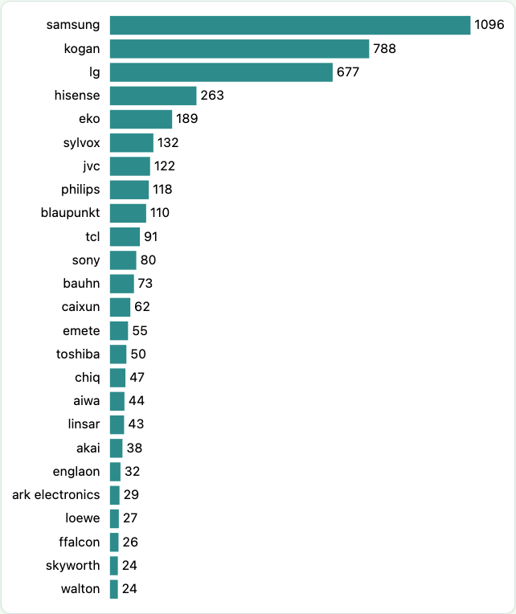
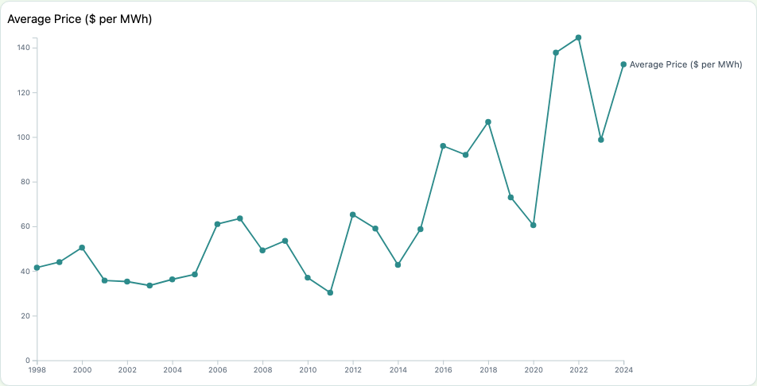
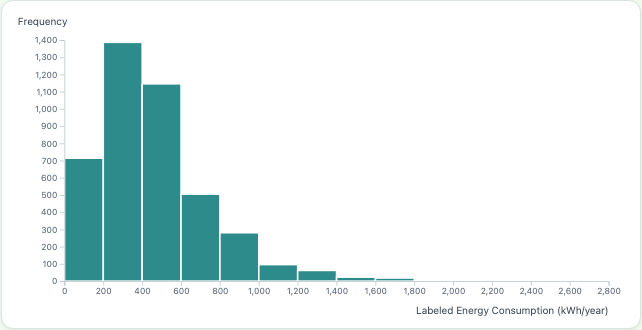

Exercise 4.1
SVG House
Shapes written by hand in SVG: rect, polygon, circle, line. A button uses D3 to turn the lights on.
SVG elements · D3 selections

Exercises 4.3–4.7
TV Brand Bar Chart
Number of TV models for each brand sold in Australia, sorted from most to fewest.
CSV loading · data binding · linear & band scales · labels

Exercises 5.1–5.3
Multi-chart Page
Energy use of 55" TVs by screen type, electricity prices over time, and the share of small, medium and large TVs.
Bar · scatter · line · donut · axes · margins

Exercises 6.1–6.4
Histogram & Scatterplot
Energy use of 4,233 TVs: a histogram with screen type and size filters, and a scatterplot of star rating vs energy with hover tooltips.
d3.bin · filters · transitions · colour scale · legend · tooltips